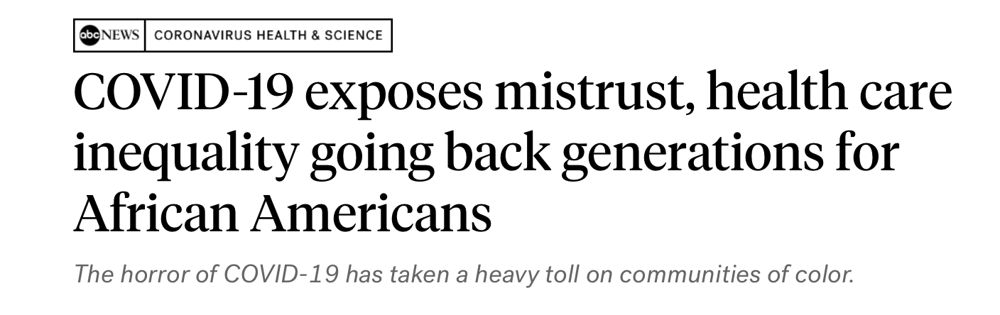
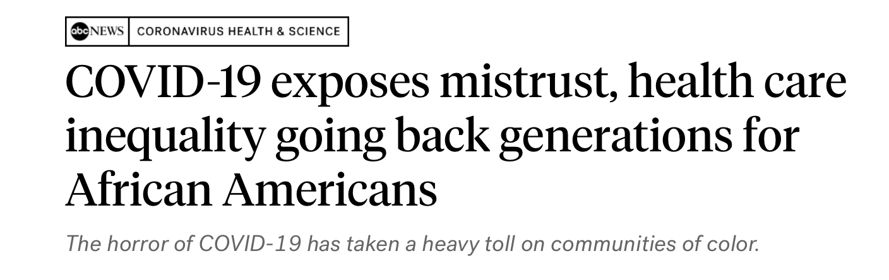

There are no equal opportunity infectors
Jon Zelner
10th Annual Conference to Increase Diversity in Mathematical Modeling and Public Health 1/21/2022
Who am I?
- Infectious disease epidemiologist and sociologist
- Assistant Professor of Epidemiology at UM since 2017
- Core faculty member in the Center for Social Epidemiology and Population Health (CSEPH) at UM
- Research group focused on infectious disease (epibayes.io)
- PhD in Sociology and Public Policy from Michigan (2011)
- Teach undergrad and grad courses on spatial epidemiology and the social history of infectious disease
Modelers have been key to COVID-19 response

From Enserink and Kupferschmidt, Science 2020
Early pandemic models focused on established priorities
- Age-specific incidence and mortality.
- Hospital and ICU capacity.
- Short- and long-term forecasting of incidence and mortality.
- Impacts of lockdowns on infection risk.
Inequality was not one of the key early foci.
Inequity in infection and death was clear from the outset
Speculation about causes of disparate mortality relied on well-worn ideas about health disparities
-
Higher prevalence of comorbidities, e.g. obesity
-
Poorer access to healthcare
-
Multigenerational households
-
Prevalence of “essential work”
Who are transmission models for?
- Public health officials
- Scientists
- Politicians
- Media
What perspective do these groups have in common?

 
